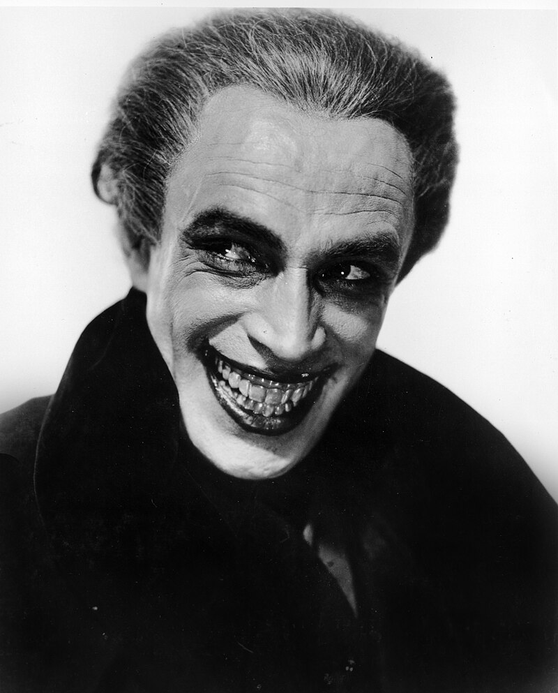

The Joker is a supervillain who appears in American comic books published by DC Comics. He was created by Bill Finger, Bob Kane, and Jerry Robinson, and first appeared in the debut issue of the comic book Batman on April 25, 1940. Credit for the Joker's creation is disputed; Kane and Robinson claimed responsibility for his design while acknowledging Finger's writing contribution. Although the Joker was planned to be killed off during his initial appearance, he was spared by editorial intervention, allowing the character to endure as the archenemy of the superhero Batman.

Bill Finger, Bob Kane, and Jerry Robinson are credited with creating the Joker,
but their accounts of the character's conception differ, each providing his own
version of events. Finger's, Kane's, and Robinson's versions acknowledge that
Finger showed them an image of actor Conrad Veidt in character as Gwynplaine
(a man whose mouth is disfigured into a perpetual grin) in the 1928 film The
Man Who Laughs as an inspiration for the Joker's appearance, and Robinson
produced a sketch of a joker playing card.[2][3]
Robinson stated that it was his 1940 card sketch that served as the character's
concept,and Finger associated that image with Veidt in the film.[2] Kane hired
the 17-year-oldRobinson as an assistant in 1939, after he saw Robinson in a
white jacket decorated withhis own illustrations.[4] Beginning as a letterer
and background inker, Robinson quicklybecame primary artist for the newly created
Batman comic book series. In a 1975 interviewin The Amazing World of DC Comics,
Robinson said he wanted a supreme arch-villain who could test Batman, not a typical
crime lord or gangster designed to be easily disposed of. He wanted an exotic,
enduring character as an ongoing source of conflict for Batman,designing a
diabolically sinister, but clownish, villain.[5][6][7] Robinson was intriguedby
villains; he believed that some characters are made up of contradictions, leading to
the Joker's sense of humor. He said that the name came first, followed by an image of a
playing card from a deck he often had at hand: "I wanted somebody visually exciting.
I wanted somebody that would make an indelible impression, would be bizarre, would be
memorable like the Hunchback of Notre Dame or any other villains that had unique physical
characters."[8] He told Finger about his concept by telephone, later providing sketches
of the character and images of what would become his iconic Joker playing-card design.
Finger thought the concept was incomplete, providing the image of Veidt with a ghastly,
permanent rictus grin.[5]
Kane countered that Robinson's sketch was produced only after Finger had already shown the
Gwynplaine image to Kane, and that it was only used as a card design belonging to the Joker
in his early appearances.[3] Finger said that he was also inspired by the Steeplechase Face,
an image in Steeplechase Park at Coney Island that resembled a Joker's head, which he sketched
and later shared with future editorial director Carmine Infantino.[9] In a 1994 interview with
journalist Frank Lovece, Kane stated his position:
Bill Finger and I created the Joker. Bill was the writer. Jerry Robinson came to me with a playing
card of the Joker. That's the way I sum it up. [The Joker] looks like Conrad Veidt – you know,
the actor in The Man Who Laughs, [the 1928 movie based on the novel] by Victor Hugo. ...
Bill Finger had a book with a photograph of Conrad Veidt and showed it to me and said,
'Here's the Joker.' Jerry Robinson had absolutely nothing to do with it, but he'll always
say he created it till he dies. He brought in a playing card, which we used for a couple of
issues for him [the Joker] to use as his playing card.[10][11]
Robinson credited himself, Finger, and Kane for the Joker's creation. He said he created the
character as Batman's larger-than-life nemesis when extra stories were quickly needed for Batman #1,
and he received credit for the story in a college course:[12]
In that first meeting when I showed them that sketch of the Joker, Bill said it reminded him of Conrad
Veidt in The Man Who Laughs. That was the first mention of it ... He can be credited and Bob himself,
we all played a role in it. The concept was mine. Bill finished that first script from my outline of
the persona and what should happen in the first story. He wrote the script of that, so he really was
co-creator, and Bob and I did the visuals, so Bob was also.[13]
I got a call from Bob Kane.... He had a new villain. When I arrived he was holding a playing card.
Apparently Jerry Robinson or Bob, I don't recall who, looked at the card and they had an idea for
a character ... the Joker. Bob made a rough sketch of it. At first it didn't look much like the Joker.
It looked more like a clown. But I remembered that Grosset & Dunlap formerly issued very cheap
editions of classics by Alexandre Dumas and Victor Hugo ...
The volume I had was The Man Who Laughs — his face had been permanently operated on so that he will
always have this perpetual grin. And it looked absolutely weird. I cut the picture out of the book
and gave it to Bob, who drew the profile and gave it a more sinister aspect. Then he worked on the face;
made him look a little clown-like, which accounted for his white face, red lips, green hair.
And that was the Joker![14]